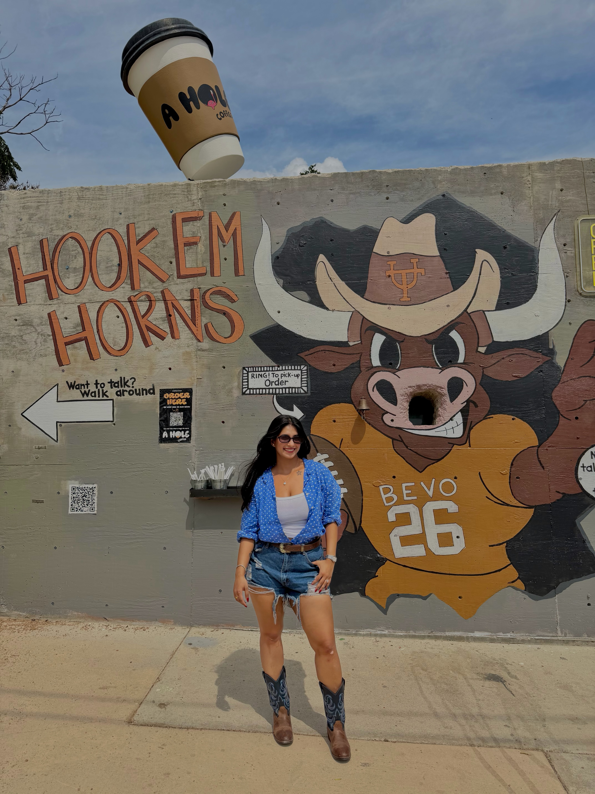
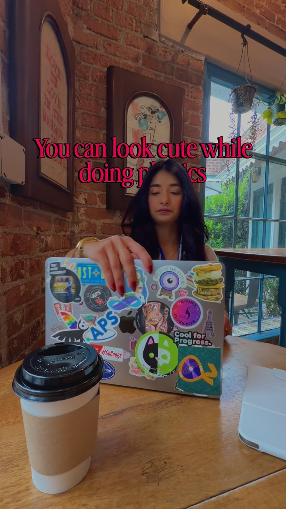
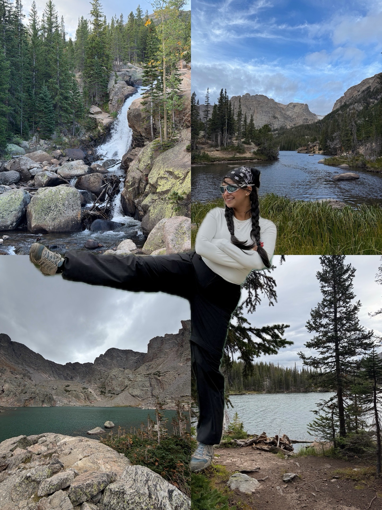
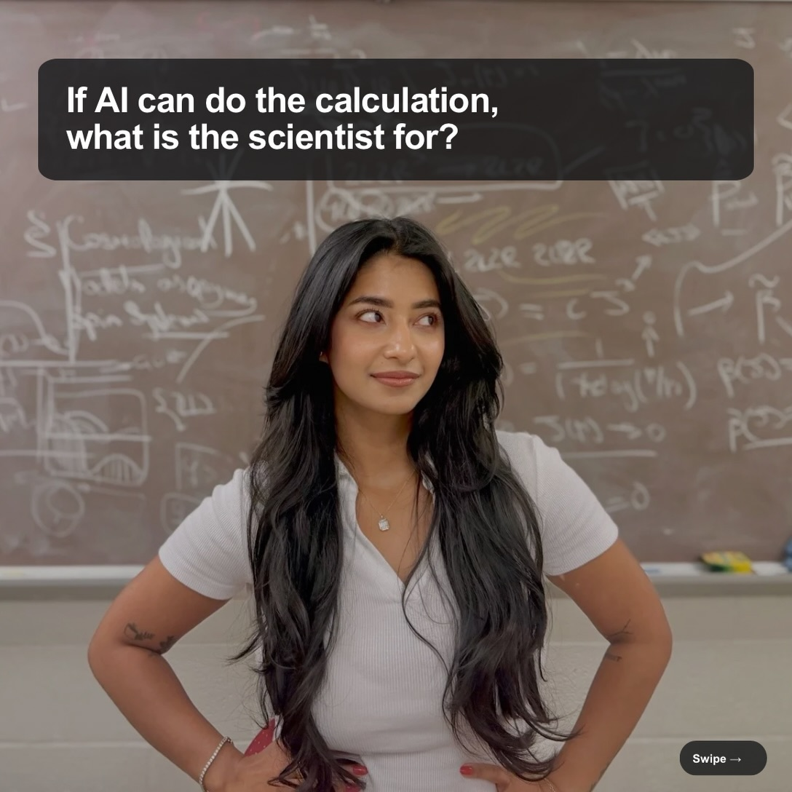
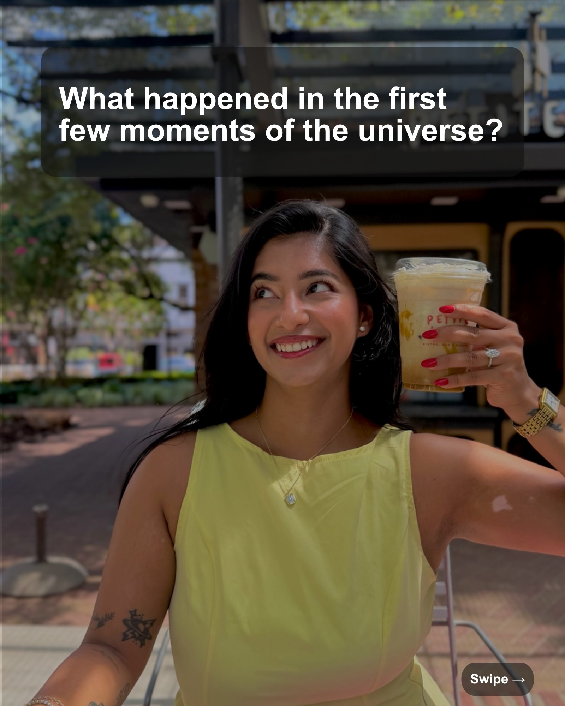
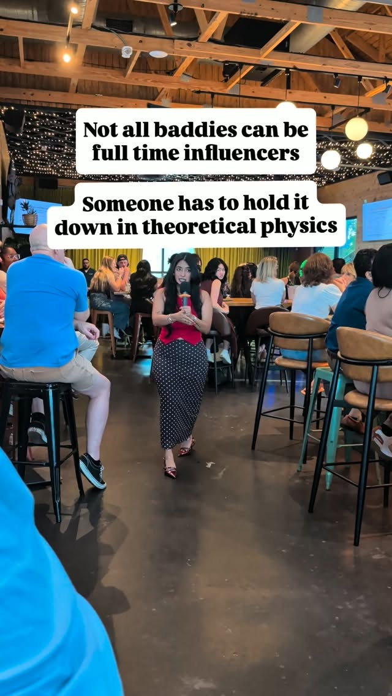

Social Media
Science communication & digital storytelling
Outside of research, I create educational content for social media platforms to make physics feel intuitive, exciting, and relatable. On Instagram, I share snippets from my life as a graduate student—behind the scenes of research, late-night musings, and bite-sized explanations of concepts like entropy, light cones, thermalization, and more.
On YouTube, I upload full-length presentations and lectures that I’ve given, covering topics across theoretical physics in simple, engaging language. Whether it’s a talk on quantum gravity or a breakdown of black hole thermodynamics, the goal is always the same: to make complex ideas beautiful and accessible.
You can follow and connect with me here:
Science, Travel & Life on Instagram
Latest posts from @prachigarella.

Doing Physics but make it cute

Mountains, lakes & waterfalls

With advances in AI, are scientists becoming obsolete?

A timeline of the early universe
